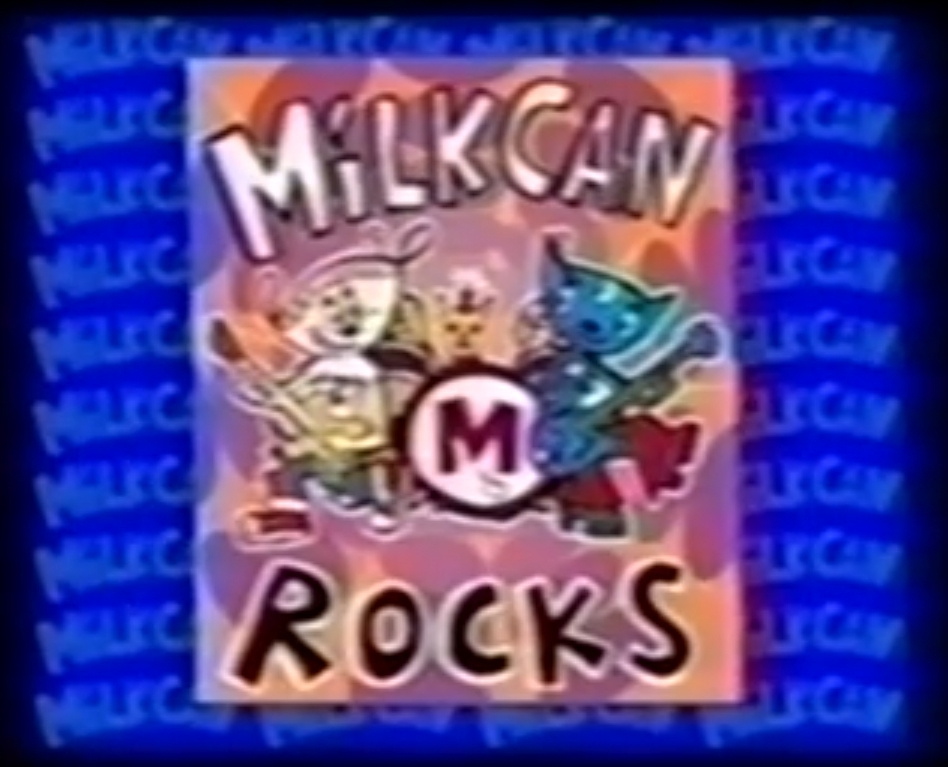

MilkCan is the fictional all-girl rock band at the heart of Um Jammer Lammy (1999). The group is led by bassist and frontwoman Katy Kat, with Lammy on lead guitar and Ma-san on drums. Their music — written and produced by NanaOn-Sha's Masaya Matsuura — powers the entire game and was released on a real-world soundtrack album, making MilkCan one of the few video game bands whose songs charted as genuine pop-rock recordings in Japan. ミルクカンは、1999年のウンジャマ・ラミーに登場する架空のガールズロックバンドです。ベース兼フロントのケイティ・キャットをリーダーに、リードギターのラミー、ドラムのマーさんで構成されています。七音社の松浦雅也が手掛けた楽曲はサウンドトラックアルバムとして実際にリリースされ、ゲームバンドとしては珍しく現実世界でもヒットしました。

This image comes from early development footage of Um Jammer Lammy and shows an earlier, never-finalized version of the band. Most notably, the Lammy figure on the left uses her very first character design — a rougher, visibly different take from the Lammy that would eventually ship in the 1999 release. Rodney Alan Greenblat revised the design repeatedly during development at NanaOn-Sha, and surviving prototype art like this offers a rare look at how MilkCan's lineup was styled before the final game was locked in. この画像はウンジャマ・ラミーの開発初期の映像から切り出されたもので、バンドの初期段階のビジュアルを捉えた一枚です。特に左側のラミーは、最初のキャラクターデザイン案を使用しており、1999年に発売された本編のラミーとは明らかに異なるラフな造形となっています。ロドニー・アラン・グリーンブラットは七音社での開発中にラミーのデザインを何度も修正しており、このようなプロトタイプ素材は、最終版が固まる前のMilkCanのメンバー像を知るための貴重な資料となっています。

Released: April 21, 1999 (Japan) — Sony Records / VORN, cat. SVWD-9013. MilkCan's debut single and the first piece of real-world music released under the band's name, landing about two months before the Um Jammer Lammy game itself. It uses the climactic Stage 7 song from the game — sung by Katy Kat in-universe — and introduced MilkCan as a "real" pop-rock band fronted by vocalist Michelle Burks. The sleeve continues the bright flat-color style of Rodney Alan Greenblat's game art, with the MilkCan name printed prominently across the front. The disc is a short release containing the main version of "Got To Move!" alongside instrumental and alternate mixes, and was issued in a limited edition with a promotional sticker — surviving copies in their original sticker-sealed state are now collectible among Um Jammer Lammy fans. 発売日：1999年4月21日（日本）— ソニーレコード／VORN、品番SVWD-9013。MilkCanのデビューシングルで、バンド名義で初めて現実世界に送り出された楽曲。ウンジャマ・ラミー本編発売の約2か月前にリリースされました。ゲーム終盤のステージ7の楽曲を収録し、作中ではケイティ・キャットが歌唱していますが、現実世界ではボーカリストのミシェル・バークスをフロントに据えた「実在のポップロックバンド」としてのMilkCanを初めて世に紹介した作品です。ジャケットはロドニー・アラン・グリーンブラットによるゲーム本編のフラットカラーのアートスタイルを踏襲しており、MilkCanのロゴが大きく配されています。ディスクにはメインバージョンに加えインストゥルメンタルや別ミックスが収録された短尺の構成で、初回限定盤としてプロモーション用ステッカー付きで発売されました。ステッカー封入の未開封品は現在、ウンジャマ・ラミーファンの間で収集品となっています。

An official in-store promotional flyer announcing MilkCan's debut single "Got To Move! (Millennium Girl)," distributed to Japanese record shops ahead of the April 21, 1999 release. The sheet carries the VORN label logo at the top left, calls out the catalog number SVWD-9013 and retail price (¥816 tax-in / ¥777 tax-out), and names the B-side — "POWER OFF! POWER ON!" — alongside the A-side. The artwork, drawn in Rodney Alan Greenblat's flat-color style, shows Lammy mid-riff on her red guitar, Katy Kat laying down a bass line beside her, and Ma-san perched on Katy's M-logo drum. A playful blurb across the top reads "CUTE で HAPPY で ULTRA すげぇバンド「Milk Can」Debut!!!" ("The cute, happy, ultra-awesome band MilkCan — debut!!!"), and the fine print credits read "作詞・作曲：ラミー＆ケイティ／プロデュース：マーさん／演奏：ミルクカン" — writing the song's credits in-universe to the band themselves. The flyer ties the release back to Um Jammer Lammy with the note "プレイステーション用ソフト『ウンジャマ・ラミー』収録曲" ("song from the PlayStation title Um Jammer Lammy") and carries the 1999 Sony Computer Entertainment / SPE Visual Works copyright. MilkCanのデビューシングル「Got To Move!（ミレニアム・ガール）」の発売告知として、1999年4月21日のリリース前に日本のレコード店向けに配布された公式店頭販促チラシです。左上にはVORNレーベルのロゴが配され、品番SVWD-9013と価格（税込816円／税抜777円）、さらにカップリング曲「POWER OFF! POWER ON!」の情報が掲載されています。イラストはロドニー・アラン・グリーンブラットによるフラットカラーのアートで、赤いギターを構えるラミー、その横でベースを弾くケイティ・キャット、Mロゴのドラムに乗るマーさんが描かれています。上部には「CUTEでHAPPYでULTRAすげぇバンド『Milk Can』Debut!!!」という遊び心のあるキャッチコピーが踊り、クレジット欄には「作詞・作曲：ラミー＆ケイティ／プロデュース：マーさん／演奏：ミルクカン」と、楽曲の作り手をあくまで作中のバンド名義で表記する演出が取られています。下部には「プレイステーション用ソフト『ウンジャマ・ラミー』収録曲」と本編ゲームとの関連が明記され、1999年のソニー・コンピュータエンタテインメント／SPEビジュアルワークスの著作権表示が入っています。

Released: June 19, 1999 (Japan) — Sony Records / VORN, cat. SVWC-7031. MilkCan's sole full-length album and the official soundtrack to Um Jammer Lammy. It collects nearly every song from the main story, rebuilt as full-band studio recordings rather than in-game rhythm-chart audio. The record was only physically pressed in Japan due to the game's softer performance abroad, and has since been reissued digitally for international listeners. Michelle Burks performs the lead vocals of Katy Kat across the album, carrying nearly every track — her bright, belted delivery gives MilkCan its core pop-rock sound and remains the most recognizable voice of the band outside the game. Ryu Watabe (credited as RYU) also contributes as a vocalist and rapper, appearing on multiple tracks including "Fright Flight!!", "Baby Baby!!", "Power Off! Power On!", "We Are MilkCan!!", and "Jam Chin". Watabe was already tied to the Um Jammer Lammy project as a voice actor — he provided in-game voices for characters including Ma-san, Joe Chin, Captain Fussenpepper, and Chop Chop Master Onion — making him one of the few performers whose voice you hear on both the retail album and inside the game itself. 発売日：1999年6月19日（日本）— ソニーレコード／VORN、品番SVWC-7031。MilkCan唯一のフルアルバムで、ウンジャマ・ラミーの公式サウンドトラックです。本編の楽曲がほぼ網羅されており、ゲーム内のリズムトラックではなくフルバンドのスタジオ録音として収録し直されています。物理盤は日本のみでリリースされ、後に海外向けにデジタル配信されました。ミシェル・バークス（Michelle Burks）はアルバム全編にわたってケイティ・キャットのリードボーカルを担当し、ほぼ全曲を歌っています。その伸びやかで力強い歌声がMilkCanの核となるポップロックサウンドを形作っており、ゲーム外でのバンドの顔となっています。ワタベ・リュウ（Ryu Watabe／クレジット表記：RYU）もボーカリスト兼ラッパーとしてアルバムに参加しており、「Fright Flight!!」「Baby Baby!!」「Power Off! Power On!」「We Are MilkCan!!」「Jam Chin」などの複数の楽曲で歌唱・ラップを披露しています。ワタベは本編ゲームでもマーさん、ジョー・チン、キャプテン・フッセンペッパー、タマネギ先生らの声を担当しており、アルバムとゲーム内音声の両方に登場する数少ない参加者の一人です。

"GOT TO MOVE!" is the in-universe MilkCan promotional music video — the closest thing the franchise has to an official MilkCan music video — featuring Lammy on lead guitar, Katy Kat on bass and vocals, and Ma-san on drums performing the title track from the Make It Sweet! album. 「GOT TO MOVE!」は、劇中バンド・ミルクカンのプロモーションPVで、シリーズで唯一に近い「公式ミルクカン・ミュージックビデオ」とも呼べる存在です。リードギターのラミー、ベース＆リードヴォーカルのケイティ・キャット、ドラムのマーさんが『Make It Sweet!』収録のタイトル曲を演奏しています。